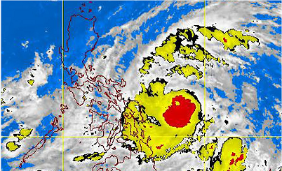
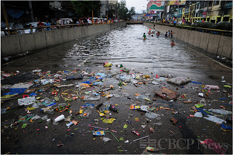

Our group proposes a solution for Metro Manila especially during rainy seasons.
It is known that Philippines is to be one of the most disastrous country when typhoon hits, that even some higher areas were expected to be visited by flood.
A lot of people are complaining that PAGASA is not doing their task properly.
They are expecting PAGASA to warn them promptly when a huge storm is approaching.
In addition, they are also expecting DepEd to suspend classes ahead of time, meaning, not within class time.

Moreover, once most areas are flooded already, people would want to know which areas are still passable by vehicle or the people themselves.
This flood mapping application would help and encourage residence to plan ahead of time during rainy days although it would be more helpful during days with typhoons.
Basically, the application shows a map with different areas that are highlighted depending on how critical the situation of the flood is in that certain area.
An area would be classified as low, moderate or high with a color designated for each type.
There are two functions in the application, first is it sort of takes the job of PAGASA since it marks the areas that are most likely to experience flood which gives people the heads up.
Second, it has a function that shows the status of the areas that are already suffering from flood.
In short, the first function is used as a warning before typhoon hits, while the second one would be useful during the typhoon.